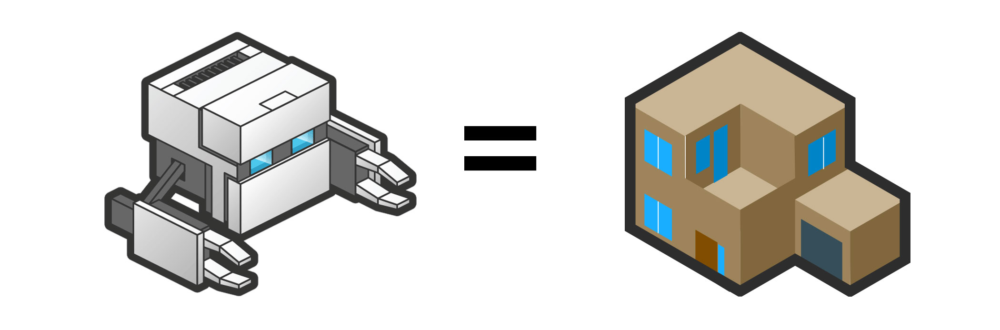

Design:
https://news.layervault.com/
Development:
https://news.ycombinator.com/
Products:
http://www.producthunt.com/
Blog:
http://alistapart.com/
Social:
http://www.quora.com/
Extra:
http://decknetwork.net/
Recap
1. Make friends. Share your passion or interests.
2. Remember where you fit in the ecosystem.
3. Focus on the basics first, and know them well.
4. Supplement your learning, wherever you are.
Thank you!